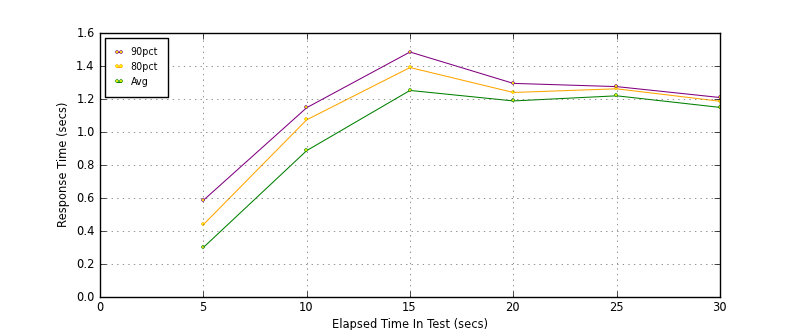
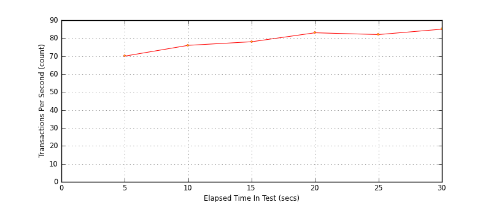
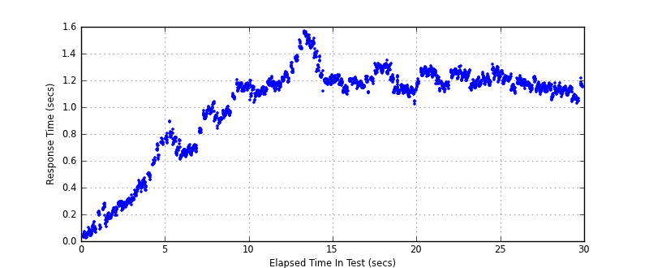

Performance Results Report
Summary
transactions: 2483
errors: 0
run time: 30 secs
rampup: 10 secs
test start: 2014-02-01 23:31:58
test finish: 2014-02-01 23:32:28
time-series interval: 5 secs
workload configuration:
| group name | threads | script name |
|---|
| user_group-1 | 100 | read_user.py |
All Transactions
Transaction Response Summary (secs)
| count | min | avg | 80pct | 90pct | 95pct | max | stdev |
|---|
| 2483 | 0.024 | 1.018 | 1.225 | 1.271 | 1.313 | 1.565 | 0.342 |
Interval Details (secs)
| interval | count | rate | min | avg | 80pct | 90pct | 95pct | max | stdev |
|---|
| 1 | 350 | 70.00 | 0.024 | 0.300 | 0.438 | 0.586 | 0.713 | 0.766 | 0.183 |
| 2 | 384 | 76.80 | 0.607 | 0.887 | 1.074 | 1.147 | 1.160 | 1.206 | 0.173 |
| 3 | 392 | 78.40 | 1.034 | 1.252 | 1.391 | 1.485 | 1.519 | 1.565 | 0.136 |
| 4 | 418 | 83.60 | 1.020 | 1.188 | 1.240 | 1.295 | 1.308 | 1.347 | 0.064 |
| 5 | 411 | 82.20 | 1.114 | 1.219 | 1.262 | 1.275 | 1.284 | 1.317 | 0.045 |
| 6 | 428 | 85.60 | 1.029 | 1.149 | 1.186 | 1.209 | 1.222 | 1.273 | 0.047 |
Graphs
Response Time: 5 sec time-series

Response Time: raw data (all points)
Throughput: 5 sec time-series

Custom Timer: get_tweets
Timer Summary (secs)
| count | min | avg | 80pct | 90pct | 95pct | max | stdev |
|---|
| 2383 | 0.024 | 1.018 | 1.225 | 1.270 | 1.313 | 1.564 | 0.342 |
Interval Details (secs)
| interval | count | rate | min | avg | 80pct | 90pct | 95pct | max | stdev |
|---|
| 1 | 350 | 70.00 | 0.024 | 0.300 | 0.438 | 0.586 | 0.713 | 0.765 | 0.183 |
| 2 | 384 | 76.80 | 0.607 | 0.887 | 1.074 | 1.147 | 1.160 | 1.205 | 0.173 |
| 3 | 392 | 78.40 | 1.033 | 1.252 | 1.391 | 1.485 | 1.519 | 1.564 | 0.136 |
| 4 | 418 | 83.60 | 1.020 | 1.188 | 1.239 | 1.295 | 1.307 | 1.346 | 0.064 |
| 5 | 411 | 82.20 | 1.113 | 1.219 | 1.262 | 1.275 | 1.284 | 1.317 | 0.045 |
| 6 | 428 | 85.60 | 1.028 | 1.149 | 1.185 | 1.209 | 1.222 | 1.271 | 0.047 |
Graphs
Response Time: 5 sec time-series
Response Time: raw data (all points)

Throughput: 5 sec time-series